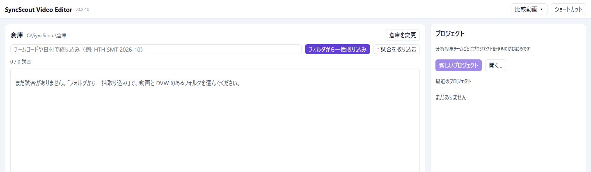
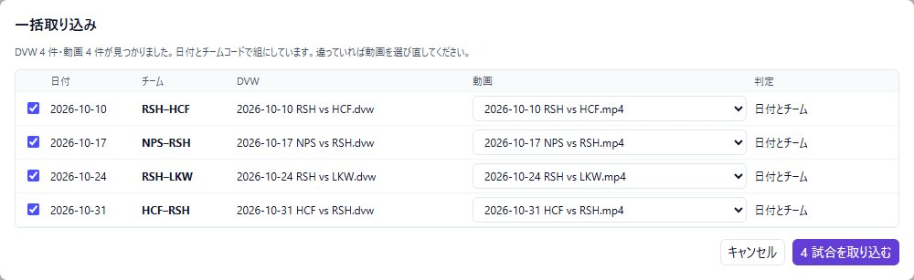
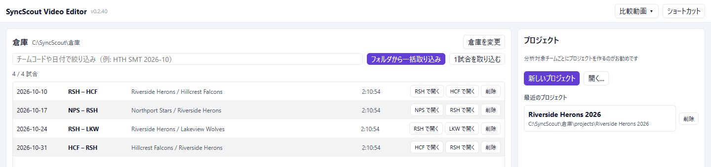

2. 試合を取り込む
試合の動画と、その試合の DVW（DataVolley・VolleyStation のスカウトファイル）を組にして、倉庫に入れます。

倉庫を決める
はじめて開くと、倉庫にするフォルダを聞かれます。空のフォルダを選ぶと、そこが新しい倉庫になります。前に使っていた倉庫のフォルダを選べば、そのまま続きから使えます。あとから倉庫を変更で切り替えられます。
動画と DVW は動かさないでください
倉庫は動画と DVW をコピーせず、もとの場所を覚えています。ファイルを移したり名前を変えたりすると見つからなくなります。そのときは、見つからないファイルの横に出る場所を指定…で、新しい場所を選び直します。
フォルダからまとめて取り込む
- ホームのフォルダから一括取り込みを押し、動画と DVW のあるフォルダを選びます。いくつ選んでもかまいません。
- 見つかった DVW と動画が、日付とチームコードで組になって並びます。「判定」に、どう組にしたかが出ます。
- 組が違っていたら、その行の動画を選び直します。入れたくない行はチェックを外します。
- ◯ 試合を取り込むを押します。

| 判定 | 意味 |
|---|---|
| 日付とチーム | 日付と両チームのコードがファイル名で合いました。 |
| 日付と片方のチーム | 日付と、チームコードの片方が合いました。 |
| 日付のみ（要確認） | 日付しか合っていません。動画が正しいか確かめてください。 |
| 同じフォルダ | DVW と同じフォルダにある動画です。 |
| 動画なし | 合う動画がありません。動画を自分で選びます。 |
動画のファイル名に、2026-10-10 RSH vs HCF.mp4 のように日付とチームコードを入れておくと、正しく組になります。
1 試合だけ取り込む
1試合を取り込むを押し、試合の動画、次にスカウトファイル（.dvw か .vsm）の順に選びます。
取り込むときに知っておくこと
- DVW は、その動画と同期したものを使います。クリップは DVW に記録された時刻で切り出します。DataVolley や VolleyStation で、動画との時刻合わせを済ませた DVW を使ってください。DVW の時刻が動画の長さを超えているときは、取り込みのときに知らせます。
- そのままでは再生できない形式の動画は、取り込みのときに再生できる形式に変換します。長い動画は時間がかかります。
- ログインしていない間は、倉庫に入れられるのは 1 試合までです。
倉庫の一覧

- 上の欄にチームコードや日付を入れると絞り込めます（例：
RSH 2026-10）。 - ◯◯ で開くは、その 1 試合だけのプロジェクトを、そのチームを分析対象にして開きます。1 試合をすぐ見たいときに使います。
- 削除は倉庫から外すだけで、動画と DVW のファイルは消えません。